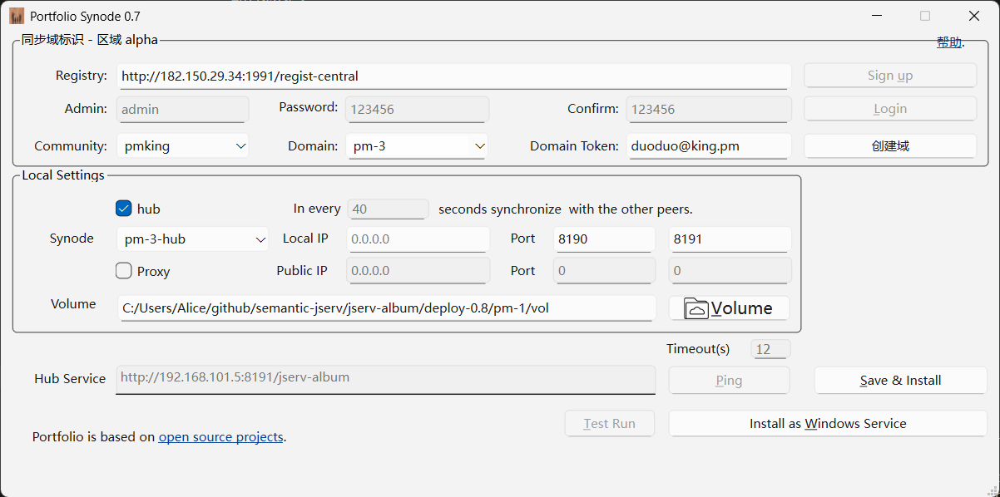
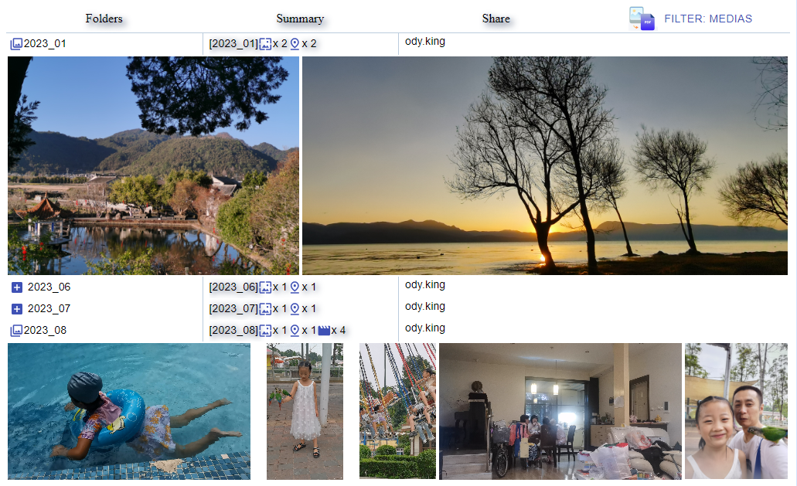

安装 Portfolio-synode
请在 Portfolio 主页 按目标操作系统下载对应的 Synode 安装包。
经验证的推荐安装步骤
安装中心节点
前提条件：
Python 3.12
Portfolio-synode 需要 Python 3.12。这意味着如果要在 Windows 上部署 Synode，需要 Windows 10 或更高版本。
Exiftool
在 Linux 上还需安装 Exiftool。
按照 官方文档 安装，或使用 apt 安装:
sudo apt install exiftool
并确认 "exiftool -ver" 可以正常运行。
关于 JDK 17
Portfolio 0.8 会下载并安装自带的 JDK 17。如果系统中已安装其他 JDK，请留意这一点。
请按照以下视频安装中心节点。
设置对等节点
下载并解压到一个文件夹中。
Windows：下载 zip 文件，解压后运行 setup-gui.exe。
Linux：下载 tar 包，解压后运行 synode-gui。
运行后应看到如下界面：

选择在 中心节点 步骤中创建的域。
设置本机网页服务端口和数据服务端口，例如 8964/8965。
仅当主机由公网地址映射而来时，才勾选反向代理（reverse proxy）。
本机 IP 会被自动检测。
修改 Jservs 的 URL
如果设置的是公网地址（即中心节点），请将 Sync-in 保持为 0 秒。无需关心 jservs，但要确保反向代理设置正确，例如
10.0.0.1 8964 / 8965
如果设置的是本地服务节点（例如私人存储设备或电脑），通常将 Sync-in 设为 60 秒；设为 0 则该机器将不再访问中心节点。
如果手动修改中心节点的 URL，请严格遵循以下格式:
http://10.0.0.1:8964/jserv-album
确认无误后，点击 Save。
此时应显示一个二维码。稍后可以用 Portfolio 客户端（例如 Portfolio Android）扫描它，连接到这个服务节点。
安装服务
Windows
点击 Install Windows Serivce，启动 2 个 Windows 服务。
每个服务的安装和启动都需要以管理员权限确认，共需确认 4 次。
注意：权限确认对话框可能被当前窗口遮挡。
Linux
复制生成的服务模板文件，以设置系统服务。
服务配置文件按 [synode-id][.service] 和 [synode-id][.web-service] 的格式命名。例如:
closed-test-1-hub.service closed-test-1-hub.web.service
在浏览器中测试
检查防火墙配置
Portfolio-synode 默认监听 TCP 端口 8965（如上例，为数据服务）和端口 8964（网页服务）。
在浏览器中打开网页
打开列出已上传文件的主页，例如:
url: http://127.0.0.1:8964/login.html
用 Portfolio Android 上传过的文件应会显示在这里。



现在可以下载 Android 客户端，并扫码登录了。 Android 客户端也需要一些设置。
卸载 Synode
在 Windows 上卸载 Portfolio-synode
卸载 Windows 服务：
在 CMD 终端或 VS Code 的 Bash 终端中运行：
# cd portfolio-synode
synode-uninstall-srv
这会卸载 Windows 服务。
之后就可以安全删除解压 zip 文件得到的 portfolio-synode 文件夹了。文件的保存位置由 卷（volume） 路径指定；如果不再需要已上传的文件，也可以删除该文件夹。
如果文件损坏导致服务无法卸载，可以 手动卸载 Windows 服务。
在 Linux 上卸载 Portfolio-synode
以下命令模板用于卸载 Synode ID 为 closed-test-1-hub 的服务：
sudo systemctl stop closed-test-1-hub.service closed-test-1-hub.web.service
sudo systemctl disable closed-test-1-hub.service closed-test-1-hub.web.service
sudo rm /etc/systemd/system/closed-test-1-hub.service
sudo rm /etc/systemd/system/closed-test-1-hub.web.service
sudo systemctl daemon-reload
sudo systemctl reset-failed